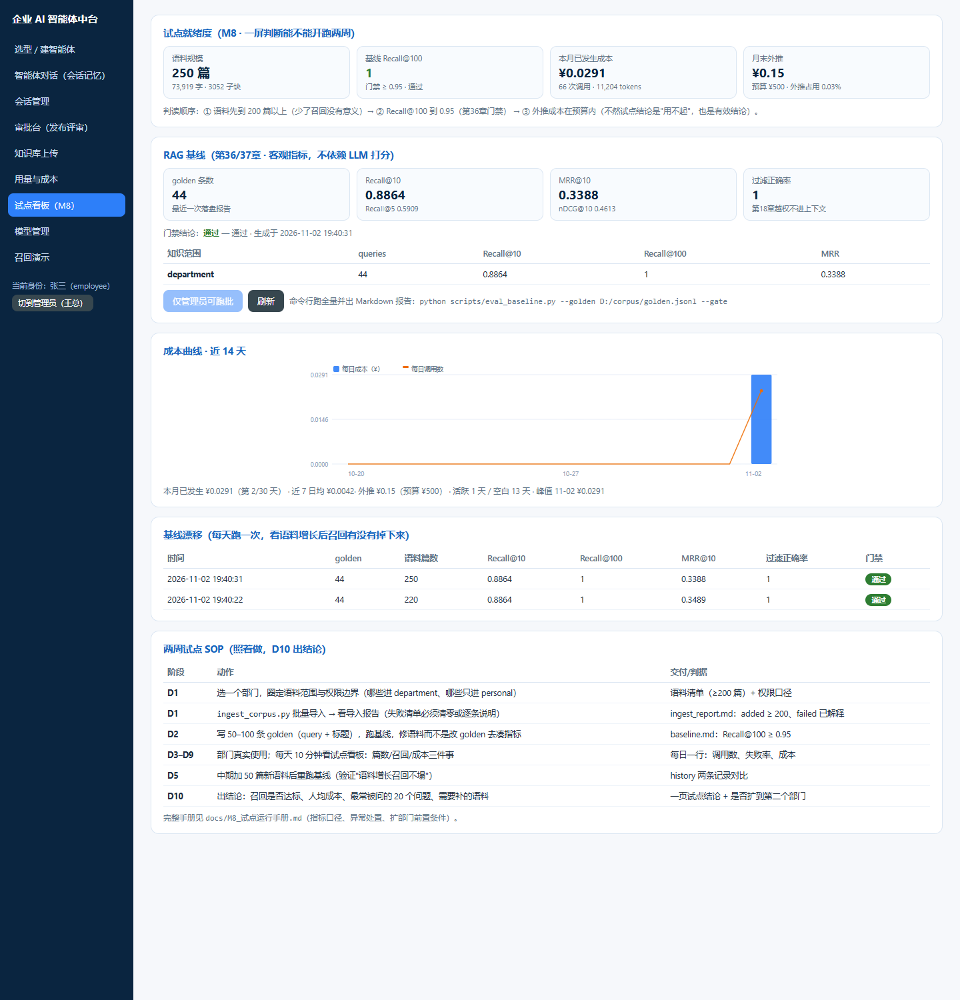
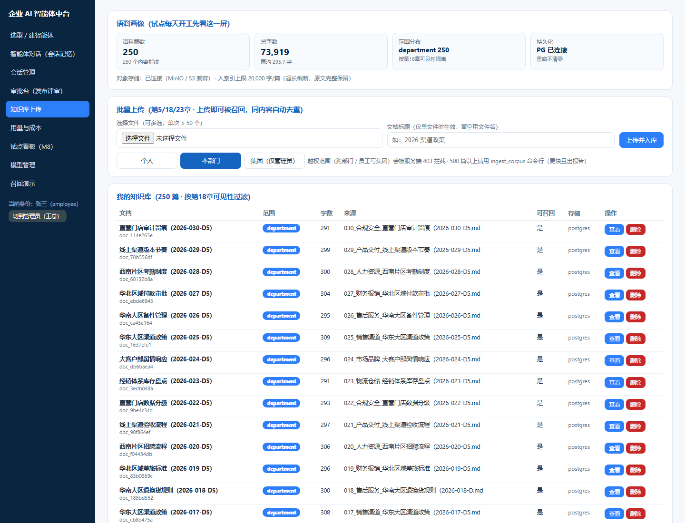

一、这轮补的六件事 （都对应试点的真实卡点）
| 卡点 | M7 之前 | M8 |
|---|---|---|
| 灌不进去 | UI 单篇上传，500 篇点 500 次 | 目录导入 ingest_corpus.py，出失败清单 |
| 重复稀释 | 无去重，副本一起进索引 | 内容指纹 sha256，同内容只入一次 |
| 重启就空 | 语料在内存，重启即清零 | PG kb_documents 载回，只重建一次索引 |
| 没法验收 | 只能跑内置 golden（18 篇演示语料） | 外部 golden（只写 query + 标题）+ JSON/MD 报告 + 漂移历史 |
| 说不清成本 | 只有聚合表，看不出趋势 | 逐日曲线（空白日补 0）+ 月累计 + 月末外推 + 预算水位 |
| 每天看什么 | 翻 4 个页面拼信息 | 试点看板一屏：语料 / 召回 / 成本 |
索引重建从「每篇重建一次」改为「批量一次」——这是 500 篇能跑起来的前提（否则 500 次全量重建＝分钟级等待）。
二、两周 SOP（D10 出结论）
| 阶段 | 动作 | 判据 |
|---|---|---|
| D1 | 圈语料与权限边界，--dry-run 看清单 | 不该进的文档没进 |
| D1 | 真导入，看 ingest_report.md | added ≥ 200，failed 逐条有解释 |
| D2 | 写 50–100 条 golden，跑基线 | Recall@100 ≥ 0.95 |
| D3–D4 | 部门真实使用，每天看板 10 分钟 | 有调用 / 无 5xx / 无 429 |
| D5 | 加 30–50 篇，重跑基线 | 召回不塌 |
| D6–D9 | 记录答得差的 20 个问题 | 形成补语料清单 |
| D10 | 出结论：召回 / 人均成本 / 扩不扩 | 一页结论 + 决策 |
试点开关：必须
SEED_DEMO_CORPUS=0。18 篇演示语料混进来会跟真实文档抢排名，
指标变成"演示环境的漂亮数字"，评审时一问就穿。
三、实测证据 （本机 2026-11-02，模拟语料 250 篇 / 8 个主题族）


| 时点 | 语料 | 子块 | golden | Recall@5 | Recall@10 | Recall@100 | MRR@10 | 门禁 |
|---|---|---|---|---|---|---|---|---|
| D1 | 220 | 2686 | 44 | 0.6364 | 0.8864 | 1.0 | 0.3489 | 通过 |
| D5（+30 篇） | 250 | 3052 | 44 | 0.5909 | 0.8864 | 1.0 | 0.3388 | 通过 |
读法：「捞得到」没变（Recall@100 稳在 1.0），但「排得靠前」略降（MRR 0.3489→0.3388、Recall@5 掉 4.5 点）——
这是加语料后的正常代价，同类文档变多目标被挤低一位。要盯的是缓降斜率，不是单次绝对值。
MRR 0.35 偏低也不是 bug：模拟语料里有 28 篇同构标题的「XX 大区渠道政策」，真实业务里同类制度并存同样如此。
四、指标口径（争论时按这张表对齐）
| 指标 | 定义 | 看它干什么 |
|---|---|---|
| Recall@100 | 目标文档是否进前 100 个可见结果 | 第36章 CI 门禁 ≥ 0.95；低于它就是「根本捞不到」 |
| Recall@10 | 是否进前 10 | 决定喂给 LLM 的上下文够不够 |
| MRR@10 | 目标排名倒数均值 | 衡量排得靠不靠前，同类文档多时会掉 |
| filter_accuracy | 越权文档是否一条都没进结果 | 第18章红线，必须 1.0；探针随语料自适应，0 条探针不算失败 |
| 月末外推 | 本月已发生 + 近 7 日均 × 剩余天数 | 回答「一个月烧多少钱」，比单价表可信 |
| 配额水位 | 部门滚动 30 天 token / 上限 | 超 100% 调用直接 429，是真拦不是告警 |
五、已知边界 （评审会被问，先自己说清）
| 项 | 现状 | 优先级 |
|---|---|---|
| 检索索引 | 内存索引，Qdrant 仅接建集合壳；≤1000 篇可用 | P0 扩部门前 |
| PG 单点 | 无主从无备份；content 列存全文 | P0 生产前 |
| 对象存储降级 | MinIO 不可达时原文落内存，重启丢原文（元数据仍在） | P1 试点常开 |
| personal 召回 | 本人文档少时泛化 query 召回弱（实测 0.14） | P1 加本人加权 |
| 评测集治理 | golden 属受控资产，改动走 Git 评审，不许为过门禁改 golden | 已定规则 |
六、一句话结论
M8 之后，这套平台的验收口径从「功能能不能点通」变成「一个部门 250 篇语料、两周、每天 10 分钟能不能回答三个问题：
语料够不够（篇数/子块）、回答准不准（Recall@100 ≥ 0.95 且不塌）、养不养得起（月末外推 ≤ 预算）。
这三件事现在都有真数据可查，试点结论不再靠 PPT。
下一步 M9：接 Qdrant 做增量索引 + golden 治理流程 + 第二个部门复制（前置条件见手册第 9 节）。
下一步 M9：接 Qdrant 做增量索引 + golden 治理流程 + 第二个部门复制（前置条件见手册第 9 节）。